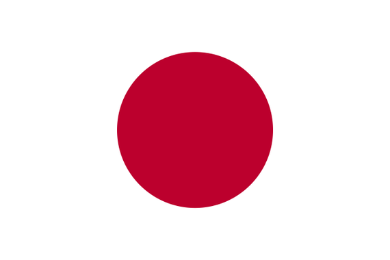
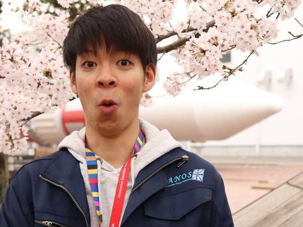
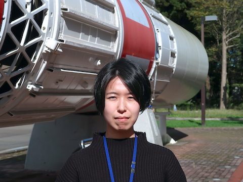
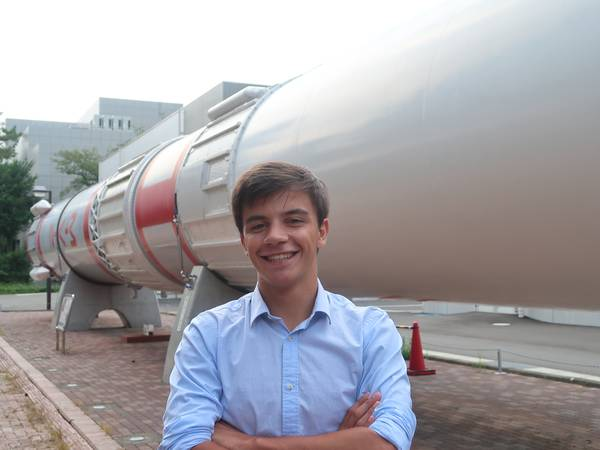
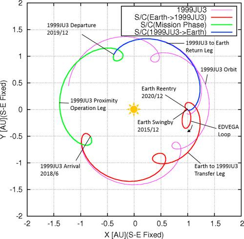
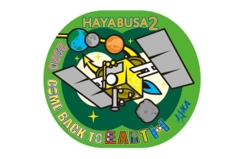

<!DOCTYPE html>
<html lang="ja">
<title>Tsuda Laboratory</title>
<meta charset="UTF-8">
<meta name="viewport" content="width=device-width、initial-scale=1">
<link rel="stylesheet" href="Style/w3.css">
<link rel="stylesheet" href="https://fonts.googleapis.com/css?family=Poppins">
<link rel="stylesheet" href="Style/Fonts/fontawesome/css/all.css">
<link rel="stylesheet" href="https://unpkg.com/leaflet@1.6.0/dist/leaflet.css"
integrity="sha512-xwE/Az9zrjBIphAcBb3F6JVqxf46+CDLwfLMHloNu6KEQCAWi6HcDUbeOfBIptF7tcCzusKFjFw2yuvEpDL9wQ=="
crossorigin=""/>
<style>
body,h1,h2,h3,h4,h5 {font-size:16px; font-family: "Poppins"、sans-serif}
body {
  background-color: var(--theme-background-color);
    color:  var(--theme-font-color);
  }

body.dark-mode img {
  filter: brightness(.8) contrast(1.2);
}

.w3-half img{margin-bottom:-6px;margin-top:16px;opacity:0.8;cursor:pointer}
.w3-half img:hover{opacity:1}
* {
  box-sizing: border-box;
}

.box {
  float: left;
  width: 50%;
  padding: 10px;
}

.clearfix::after {
  content: "";
  clear: both;
  display: table;
}
p.thick {
  font-weight: bold;
}

  /* Overla Image */
  .container {
    position: relative;
    width: 50%;
  }
  
  .image {
    display: block;
    width: 100%;
    height: auto;
  }
  
  .overlay {
    position: absolute;
    top: 0;
    bottom: 0;
    left: 0;
    right: 0;
    height: 100%;
    width: 100%;
    opacity: 0;
    transition: .5s ease;
    background-color: #008CBA;
  }
  
  .container:hover .overlay {
    opacity: 1;
  }
  
  .text {
    color: white;
    font-size: 20px;
    position: absolute;
    top: 50%;
    left: 50%;
    transform: translate(-50%、-50%);
    -ms-transform: translate(-50%、-50%);
  }
</style>


 <!-- Make sure you put this AFTER Leaflet's CSS -->
 <script src="https://unpkg.com/leaflet@1.6.0/dist/leaflet.js"
   integrity="sha512-gZwIG9x3wUXg2hdXF6+rVkLF/0Vi9U8D2Ntg4Ga5I5BZpVkVxlJWbSQtXPSiUTtC0TjtGOmxa1AJPuV0CPthew=="
   crossorigin=""></script>

<body>

<!-- Sidebar/menu -->
<nav class="w3-sidebar w3-tsudalabblue w3-collapse w3-top w3-large w3-padding" style="z-index:3;width:300px;font-weight:bold;" id="mySidebar"><br>
  <a href="javascript:void(0)" onclick="w3_close()" class="w3-button w3-hide-large w3-display-topleft w3-hover-white" style="width:100%;font-size:22px">Close Menu</a>
  <div class="w3-container">
    <h3 class="w3-padding-64"><b>Tsuda<br>Laboratory</b></h3>
  </div>
  <div class="w3-bar-block">
    <a href="#" onclick="w3_close()" class="w3-bar-item w3-button w3-hover-white">Home</a> 
    <a href="#introduction" onclick="w3_close()" class="w3-bar-item w3-button w3-hover-white">Introduction</a> 
    <a href="#research" onclick="w3_close()" class="w3-bar-item w3-button w3-hover-white">Research</a> 
    <a href="#members" onclick="w3_close()" class="w3-bar-item w3-button w3-hover-white">Members</a> 
    <a href="#publications" onclick="w3_close()" class="w3-bar-item w3-button w3-hover-white">Publications</a> 
    <a href="#contact" onclick="w3_close()" class="w3-bar-item w3-button w3-hover-white">Contact Us</a> 
    <a href="#access" onclick="w3_close()" class="w3-bar-item w3-button w3-hover-white">Access</a> 
    <a href="#links" onclick="w3_close()" class="w3-bar-item w3-button w3-hover-white">Links</a> 
    <div class="w3-dropdown-hover w3-mobile">
     <button onclick="w3_close()" class="w3-bar-item w3-button w3-hover-white">Language <i class="fa fa-caret-down"></i></button>
      <div class="w3-dropdown-content w3-bar-block w3-dark-grey">
              <a href="homepage_JA.html" onclick="w3_close()" class="w3-bar-item w3-button w3-mobile w3-hover-white">日本語  </a>
              <a href="homepage_EN.html" onclick="w3_close()" class="w3-bar-item w3-button w3-mobile w3-hover-white">English </a>
            </div>
    </div>
    <!-- Rounded switch -->
    <a class="w3-bar-item">Dark mode   
      <label class="switch">
      <input type="checkbox">
      <span class="slider round"></span>
    </label></a>

  </div>
</nav>

<!-- Top menu on small screens -->
<header class="w3-container w3-top w3-hide-large w3-tsudalabblue w3-xlarge w3-padding">
  <a href="javascript:void(0)" class="w3-button w3-tsudalabblue w3-margin-right w3-hover-white" onclick="w3_open()">☰</a>
  <span>Tsuda Laboratory</span>
</header>

<!-- Overlay effect when opening sidebar on small screens -->
<div class="w3-overlay w3-hide-large" onclick="w3_close()" style="cursor:pointer" title="close side menu" id="myOverlay"></div>

<!-- !PAGE CONTENT! -->
<div class="w3-main" style="margin-left:340px;margin-right:40px">

  <!-- Header -->
  <div class="w3-container" style="margin-top:80px" id="introduction">
    <h1 class="w3-jumbo"><b>Spaceflight Mechanics and Exploration Systems Laboratory</b></h1>
    <h1 class="w3-xxxlarge w3-text-tsudalabblue"><b>Introduction.</b></h1>
    <hr style="width:50px;border:5px solid var(--main-color)" class="w3-round">
    <p>津田研究室は総合研究大学院大学および宇宙科学研究所(宇宙研)に所属しており、宇宙研ならではの宇宙探査ミッションへの応用を中心とした、アストロダイナミクス（宇宙飛行力学）の研究をしています.
      研究テーマは、常に実応用と物理原理の結びつきを意識したものを目指しており、 深宇宙探査機・人工衛星の軌道設計、太陽系探査手法の研究、誘導・航法・制御、探査機システム設計について、実験的・解析的アプローチで取り組みます．
      これまで学生とともに創出してきた研究の関連プロジェクトは、
      10cm級超小型衛星「キューブサット」の開発、観測ロケット・大気球を使ったソーラーセイル展開実験、小惑星探査機「はやぶさ」、小型ソーラー電力セイル実証機「イカロス」、小惑星探査機「はやぶさ２」があります。
      プロジェクトを通じて得られた新たな知見から研究テーマを創出すること、また、研究を通じて得られた成果をプロジェクトに適用することで、プロジェクトと学術研究、双方に貢献することができます。<br>
      津田研究室では、東京大学大学院の川口研究室・川勝研究室と共同で活動しており, 頼りになる先輩方や、宇宙科学研究所に所属する職員の方に研究相談を行なうことができる環境が整えられています.
      上記に上げたプロジェクト以外にも学生の内から積極的にかかわることができる環境が整えられています.
      実践的な課題創出と実ミッションへの適用を通じて、"宇宙工学"の本質を学ぶことができます.
    </p>
  </div>
  
  <!-- Photo grid (modal) -->
  <div class="w3-row-padding">
    <div class="w3-half">
      
      
      
    </div>

    <div class="w3-half">
      
      
      
    </div>
  </div>

  <!-- Modal for full size images on click-->
  <div id="modal01" class="w3-modal w3-black" style="padding-top:0" onclick="this.style.display='none'">
    <span class="w3-button w3-black w3-xxlarge w3-display-topright">×</span>
    <div class="w3-modal-content w3-animate-zoom w3-center w3-transparent w3-padding-64">
      
      <p id="caption"></p>
    </div>
  </div>

  <!-- Research -->
  <div class="w3-container" id="research" style="margin-top:75px">
    <h1 class="w3-xxxlarge w3-text-tsudalabblue"><b>Research.</b></h1>
    <hr style="width:50px;border:5px solid var(--main-color)" class="w3-round">
    <p> 研究テーマは，常に実応用と物理原理の結びつきを意識したものを目指しています．<br>
      研究室に所属している学生は、宇宙研のプロジェクトや将来ミッションの検討など、実践的な課題創出・課題解決を通じて、研究テーマを決定します。</p>
    <p> 研究を通じて学生が携わった宇宙研のプロジェクト:</p>
    <ul>
      <li> 10 cm クラスのキューブサットの開発</li>
      <li> 観測ロケット・大気球を使ったソーラーセイル展開実験</li>
      <li> 小惑星探査機「はやぶさ」</li>
      <li> 小型ソーラー電力セイル実証機「イカロス」</li>
      <li> 小惑星探査機「はやぶさ2」</li>
    </ul>
    <p> 研究テーマ</p>
  </p>
    <div class="w3-row-padding_mod">
      <div class="w3-col ml3 w3-margin-bottom ">
        <div class="w3-light-grey">
          
          <div class="w3-container w3-center">
            <p><span style="font-size:30px;">Astrodynamics</span></p>

            <a target="" rel="noopener"  href="Research/en/research_Astro_JA.html">
            <p><button class="w3-button w3-tsudalabblue-button" style="padding: 15px; border-radius: 15px">See More</button></p>
          </a>
          </div>
        </div>
      </div>
      <div class="w3-col ml3 w3-margin-bottom ">
        <div class="w3-light-grey">
          
          <div class="w3-container w3-center">
            <p><span style="font-size:30px;">Visual Navigation</span></p>

            <a target="" rel="noopener noreferrer"  href="Research/en/research_Visual_JA.html">
            <p><button class="w3-button w3-tsudalabblue-button" style="padding: 15px; border-radius: 15px">See More</button></p>
          </a>
          </div>
        </div>
      </div>
      <div class="w3-col ml3 w3-margin-bottom ">
        <div class="w3-light-grey">
          
          <div class="w3-container w3-center">
            <p><span style="font-size:30px;">Solar Sails</span></p>

            <a target="" rel="noopener noreferrer"  href="Research/en/research_Sails_JA.html">
            <p><button class="w3-button w3-tsudalabblue-button" style="padding: 15px; border-radius: 15px">See More</button></p>
          </a>
          </div>
        </div>
      </div>
      <div class="w3-col ml3 w3-margin-bottom ">
        <div class="w3-light-grey">
          
          <div class="w3-container w3-center">
            <p><span style="font-size:30px;">Proximity Thrusting</span></p>

            <a target="" rel="noopener noreferrer"  href="Research/en/research_Thrust_JA.html">
            <p><button class="w3-button w3-tsudalabblue-button" style="padding: 15px; border-radius: 15px">See More</button></p>
          </a>
          </div>
        </div>
      </div>
    </div>
   
  </div>

   <!-- Members -->
   <div class="w3-container" id="members" style="margin-top:75px">
    <h1 class="w3-xxxlarge w3-text-tsudalabblue"><b>Members.</b></h1>
    <hr style="width:50px;border:5px solid var(--main-color)" class="w3-round">
    <p><b>The best team in the world.</b></p>
    <h1 class="w3-xxlarge w3-text-tsudalabblue"><b>Current Members.</b></h1>
  </div>

  <!-- The Team -->
  <div class="w3-row-padding_mod">
    <div class="w3-col m4 w3-margin-bottom">
      <div class="w3-light-grey">
        
        <div class="w3-container">
          <h3>津田 雄一　教授　</h3>
          <p class="w3-opacity">総研大教授 & はやぶさ2 プロジェクトマネージャー</p>
          <p>好物はステーキ. カープ派閥</p>
        </div>
      </div>
    </div>
    <div class="w3-col m4 w3-margin-bottom">
      <div class="w3-light-grey">
        
        <div class="w3-container">
          <h3>高尾 勇輝</h3>
          <p class="w3-opacity">JSPS Postdoc</p>
          <p>好きなスポーツはバスケ. ホークス派閥筆頭</p>
        </div>
      </div>
    </div>
    <div class="w3-col m4 w3-margin-bottom">
      <div class="w3-light-grey">
        
        <div class="w3-container">
          <h3>Miwa Fukazawa</h3>
          <p class="w3-opacity">Secretary</p>
          <p>研究室の影の支配者</p>
        </div>
      </div>
    </div>
  </div>

  <div class="w3-row-padding_mod">
    <div class="w3-col ml3 m4 w3-margin-bottom">
      <div class="w3-light-grey">
        
        <div class="w3-container">
          <h3>Shuya Kashioka</h3>
          <p class="w3-opacity">D3 / 総合研究大学院大学</p>
          <p>好物は甘いもの. 阪神派閥</p>
        </div>
      </div>
    </div>
    <div class="w3-col ml3 m4 w3-margin-bottom">
      <div class="w3-light-grey">
        
        <div class="w3-container">
          <h3>Roger Gutierrez Ramon</h3>
          <p class="w3-opacity">D1 / 総合研究大学院大学</p>
          <p>Hi!. フットサルプレイヤー </p>
        </div>
      </div>
    </div>    
    <div class="w3-col ml3  m4 w3-margin-bottom">
      <div class="w3-light-grey">
        
        <div class="w3-container">
          <h3>Genki Ohira</h3>
          <p class="w3-opacity">D1 / 総合研究大学院大学</p>
          <p>隠れミュージシャン. 巨人派閥筆頭 </p>
        </div>
      </div>
    </div>
    <div class="w3-col ml3 m4 w3-margin-bottom">
      <div class="w3-light-grey">
        
        <div class="w3-container">
          <h3>Maiko Yamakawa</h3>
          <p class="w3-opacity">M2 / 総合研究大学院大学</p>
          <p> 隠れ絵かき兼京都人 </p>
        </div>
      </div>
    </div>
    <div class="w3-col ml3 m4 w3-margin-bottom">
      <div class="w3-light-grey">
        
        <div class="w3-container">
          <h3>Kaoru Namiki</h3>
          <p class="w3-opacity">M1 / 総合研究大学院大学</p>
          <p> 新入生 新人Macユーザー</p>
        </div>
      </div>
    </div>
   </div>

   <!-- Past Team Members -->
  <div class="w3-container" style="margin-top:75px">
    <h1 class="w3-xxlarge w3-text-tsudalabblue"><b>Past Members.</b></h1>
  </div>

    <div class="w3-row-padding_mod">
      <div class="w3-col l2 m3 w3-margin-bottom">
      <div class="w3-light-grey">
        
        <div class="w3-container">
          <h3>Manel Caballero</h3>
          <p class="w3-opacity">Short-term International Student</p>
        </div>
      </div>
    </div>
      <div class="w3-col l2 m3 w3-margin-bottom">
      <div class="w3-light-grey">
        
        <div class="w3-container">
          <h3>門倉 御幸</h3>
          <p class="w3-opacity">Special Joint Researcher</p>
        </div>
      </div>
    </div>  
    <div class="w3-col l2 m3 w3-margin-bottom">
      <div class="w3-light-grey">
        
        <div class="w3-container">
          <h3>Alessandro Latino</h3>
          <p class="w3-opacity">Short-term International Student</p>
        </div>
      </div>
    </div>
    <div class="w3-col l2 m3 w3-margin-bottom">
      <div class="w3-light-grey">
        
        <div class="w3-container">
          <h3>Daniel Villegas Pinto</h3>
          <p class="w3-opacity">Short-term International Student</p>
        </div>
      </div>
    </div>
    <div class="w3-col l2 m3 w3-margin-bottom">
      <div class="w3-light-grey">
        
        <div class="w3-container">
          <h3>Giacomo Acciarini</h3>
          <p class="w3-opacity">Short-term International Student</p>
        </div>
      </div>
    </div>
    <div class="w3-col l2 m3 w3-margin-bottom">
      <div class="w3-light-grey">
        
        <div class="w3-container">
          <h3>Tommaso Pino</h3>
          <p class="w3-opacity">Short-term International Student</p>
        </div>
      </div>
    </div>
    <div class="w3-col l2 m3 w3-margin-bottom">
      <div class="w3-light-grey">
        
        <div class="w3-container">
          <h3>Stefania Soldini</h3>
          <p class="w3-opacity">JSPS Postdoc</p>
        </div>
      </div>
    </div>
    <div class="w3-col l2 m3 w3-margin-bottom">
      <div class="w3-light-grey">
        
        <div class="w3-container">
          <h3>Coleen Madlinger</h3>
          <p class="w3-opacity">MIT-JAPAN Short-term Training Program</p>
        </div>
      </div>
    </div>
   </div>

  <!-- Publications -->
  <div class="w3-container" id="publications" style="margin-top:75px">
    <h1 class="w3-xxxlarge w3-text-tsudalabblue"><b>Publications.</b></h1>
    <hr style="width:50px;border:5px solid var(--main-color)" class="w3-round">
    <p>ここでは、私たちの研究室のメンバーが発表した論文の中から、いくつかの論文をご紹介します。全リストをご覧になりたい方は、下のボタンをクリックしてください。 </p>

    <div class="w3-margin-bottom" style="width:100%">
      <header class="w3-container w3-tsudalabtablesubheader">
        <h3 style="font-weight:bold">Flight Status of Robotic Asteroid Sample Return Mission Hayabusa2</h3>
      </header>
      <div class="w3-container w3-light-grey">
        <p>Tsuda、Y.、Nakazawa、S.、Kushiki、K.、Yoshikawa、M.、Kuninaka、H.、Watanabe、S.</p>
        <hr style="border:1px solid var(--table-background-subheader)">
        
        <h3 style="font-weight:bold">Abstract</h3>
        <p>The Japan Aerospace Exploration Agency launched the asteroid sample return spacecraft “Hayabusa2” on December 3、2014. Hayabusa2 will reach the C-type asteroid 1999 JU3 in 2018、and return back to the Earth in 2020. Sample collections from three sites、four surface rovers deployment and a 4 MJ-class kinetic impact crater generation are planned in the 1.5 years of the asteroid-proximity operation. The mission objective of Hayabusa2 has three aspects、science、engineering and exploration、all of which would be expanded by the successful round-trip journey. This paper describes the outline of the Hayabusa2 mission and the current flight status after the seven month of the interplanetary cruise.</p><br>
      </div>
      <a target="" rel="noopener"  href="https://www.sciencedirect.com/science/article/pii/S0094576515302691#f0015">
      <button class="w3-button w3-block w3-tsudalabblue-button">ActaAstronautica、Vol.127、pp.702-709、doi:10.1016/j.actaastro.2016.01.027、Accepted on Jan 15、2016.</button>
        </a>
    </div>

    <div class="w3-margin-bottom"  style="width:100%">
      <header class="w3-container w3-tsudalabtablesubheader">
        <h3 style="font-weight:bold">Generalized Attitude Model for Spinning Solar Sail Spacecraft</h3>
      </header>
      <div class="w3-container w3-light-grey">
        <p>Tsuda、Y.、Saiki、T.、Funase、R.、Mimasu、Y.</p>
        <hr style="border:1px solid var(--table-background-subheader)">
        
        <h3 style="font-weight:bold">Abstract</h3>
        <p>An attitude model for a general spinning solar sail spacecraft under the influence of solar radiation pressure is presented. This model、called “Generalized Spinning Sail Model”、can be applied to realistic sails with nonflat surfaces that have nonuniform optical properties. The unique behaviors predicted by the generalized spinning sail model are verified by actual operation of the Japanese spinning solar sail spacecraft IKAROS. It is shown how imperfections in the sail surface affect the attitude motion of spinning sails、and a compact mathematical model that can precisely reproduce the spin-averaged motion of the spinning sails is derived. The stability conditions and a reduced model that preserves the key characteristics of the generalized spinning sail model are also derived to reveal the unique properties of the attitude behavior of spinning sails.</p><br>
      </div>
      <a target="" rel="noopener"  href="https://arc.aiaa.org/doi/10.2514/1.59516">
      <button class="w3-button w3-block w3-tsudalabblue-button">AIAA Journal of Guidance、Control and Dynamics、Vol. 36、No. 4、2013、pp. 967-974. doi:10.2514/1.59516</button>
        </a>
    </div>

    <div class="w3-margin-bottom" style="width:100%">
      <header class="w3-container w3-tsudalabtablesubheader">
        <h3 style="font-weight:bold">Solar Radiation Pressure-Assisted Fuel-Free Sun Tracking and Its Application to Hayabusa2</h3>
      </header>
      <div class="w3-container w3-light-grey">
        <p>Tsuda、Y.、Ono、G.、Saiki、T.、Mimasu、Y.、Ogawa、N.、Terui、F.</p>
        <hr style="border:1px solid var(--table-background-subheader)">
        
        <h3 style="font-weight:bold">Abstract</h3>
        <p>This paper describes the modeling、dynamical characteristics、and implementation of an attitude control method that actively uses solar radiation pressure. The theory behind this control method is called the generalized sail dynamics model、which was developed by the authors and successfully applied to Hayabusa2、which is a Japanese asteroid explorer launched in 2014. The quasi-stable property of the dynamics is proved、which enables the implementation of a fuel-free sun-tracking attitude using only one reaction wheel. As of August 2016、the attitude of Hayabusa2 was maintained within 10 deg offset from the sun direction for 193 days in total without consuming any fuel. The auto-sun tracking、single-wheel、and fuel-free features were distinctive as compared to any other conventional control methods、such as three-axis stabilization、and brought many merits to practical spacecraft operations. The theoretical background、the prelaunch evaluation based on a finite element model analysis、the identification process of the dynamics model carried out for the Hayabusa2 mission operation、and their effectiveness are presented in this paper.</p><br>
      </div>
      <a target="" rel="noopener"  href="https://arc.aiaa.org/doi/full/10.2514/1.A33799">
      <button class="w3-button w3-block w3-tsudalabblue-button">Journal of Spacecraft and Rockets 2017 54:6、1284-1293、doi.org/10.2514/1.A33799</button>
        </a>
    </div>

    <h1 class="w3-xlarge w3-text-tsudalabblue" id="journalArticles"><b>Journal Articles.</b></h1>
    <p>Tsuda、Y.、Nakazawa、S.、Kushiki、K.、Yoshikawa、M.、Kuninaka、H.、Watanabe、S.、Flight Status of Robotic
        Asteroid Sample Return Mission Hayabusa2、ActaAstronautica、Vol.127、pp.702-709,
        doi:10.1016/j.actaastro.2016.01.027、Accepted on Jan 15、2016.</p>
        <p>   Tsuda、Y.、Saiki、T.、Funase、R.、Mimasu、Y.、Generalized Attitude Model for Spinning Solar Sail
        Spacecraft、AIAA Journal of Guidance、Control and Dynamics、、Vol. 36、No. 4、2013、pp. 967-974. doi:
        10.2514/1.59516.</p>
        <p>Tsuda、Y.、Mori、O.、Funase、R.、Sawada、H.、Yamamoto、T.、Saiki T.、Endo、T.、Yonekura、K.、Hoshino、H.,
          Kawaguchi、J.、Achievement of IKAROS –Japanese Deep Space Solar Sail Demonstration Mission、Acta
          Astronautica、Volume 82、Issue 2、February 2013、pp.183–188. doi:10.1016/j.actaastro.2012.03.032.</p>

    <h1 class="w3-xlarge w3-text-tsudalabblue" id="conferenceProceedingsIntl"><b>Conference Proceedings (International).</b></h1>
    <p>Tsuda、Y.、Ono、G.、Generalized Attitude Dynamics Model for Angular Momentum Stabilized Sail、4th
      International Solar Sail Symposium、No.17078、Kyoto、2017.1.29.</p>
      <p> Tsuda、Y.、Ono、G.、Saiki、T.、Mimasu、Y.、Ogawa、N.、Terui、F.、SRP-Assisted Fuel-Free Sun Tracking and
        Its Application to Hayabusa2、AIAA/AAS、Astrodynamics Specialist Conference、AIAA-2016-5379、2016.</p>
      <p>Tsuda. Y.、Ono、G.、Akatsuka、K.、Saiki、T.、Mimasu、Y.、Ogawa、N.、Terui、F.、Generalized Attitude Model
        for Momentum-Biased Solar Sail Spacecraft、AAS Astrodynamics Specialist Conference、AAS15-656、Vail、CO,
        2015.8.12.</p>


    <h1 class="w3-xlarge w3-text-tsudalabblue" id="conferenceProceedingsJapan"><b>Conference Proceedings (Japan).</b></h1>
    <p>津田雄一、渡邊誠一郎、はやぶさ２プロジェクトチーム、小惑星探査機はやぶさ２: 運用状況及び小惑星近傍フェーズに向けた準備状況、第17回宇宙科学シンポジウム、S4-001、2017.1.6.</p>
      <p> 津田雄一、渡邊誠一郎、はやぶさ２プロジェクトチーム、小惑星探査機「はやぶさ２」の運用状況：巡航開始から地球スイングバイまで、第16回宇宙科学シンポジウム、S4-002、2016.1.6.</p>
      <p>Tsuda、Y.、Robust Trajectory Design for Mars System Sample Return Mission（ロバスト性を考慮した火星圏サンプルリターンのための軌道設計）、2016 ISAS Workshop on Astrodynamics and Flight Mechanics、B-2,
        Sagamihara、2016.7.25.</p>

    <h1 class="w3-xlarge w3-text-tsudalabblue" id="invitedTalks"><b>Invited Talks / Keynote Lectures.</b></h1>
    <p>津田雄一、はやぶさ２における宇宙工学の役割 6th UNISEC Takumi Conference、2016.2.29.</p>
      <p> Tsuda,. Y.、Yoshikawa、M.、Takanao、S.、Watanabe、S.、Hayabusa2 – Round Trip Exploration to Near-Earth
        Asteroid ‘Ryugu’、Misasa International Symposium 2016 (Frontiers in Earth and Planetary Materials Research,
        S4-01、Misasa、2016.3.10. </p>
      <p>Tsuda、Y.、Mori、O.、Funase、R.、Sawada、H.、Yamamoto、T.、Saiki、T.、Endo、T.、Yonekura、K.、Hoshino、H.
        and Kawaguchi、J.、Achievement of IKAROS – Japanese Interplanetary Deep Space Solar Sail Demonstration
        Mission、7th IAA Symposium on Realistic Near-Term Advanced Scientific Space Missions、Aosta、Italy,
        2011.7.12.</p>


    <div class="w3-container w3-center">
      <a target="" rel="noopener"  href="Publications/publications_JA.html">
      <p><button class="w3-button w3-tsudalabblue-button" style="padding: 15px; border-radius: 15px"><span style="font-size:16px;">See full list of Publications</span></button></p>
    </a>
    </div>

  </div>
   
  <!-- Contact -->
  <div class="w3-container" id="contact" style="margin-top:75px">
    <h1 class="w3-xxxlarge  w3-text-tsudalabblue"><b>Contact us.</b></h1>
    <hr style="width:50px;border:5px solid var(--main-color)" class="w3-round">
    <h1 class="w3-xlarge w3-text-tsudalabblue"><b>研究活動を希望する皆さんへ</b></h1>
         <p>
          一緒に研究を行いたい方は、下記の制度を参考にしてください。
          また、研究室について直接質問したい方は、次のアドレスへお願いいたします.</p>
          <div class="w3-container w3-center">tsuda.yuichi "at" jaxa.jp (Please change "at" to @)</div>
        </p>

          <h1 class="w3-xlarge w3-text-tsudalabblue" ><b>総合研究大学院大学 物理科学研究科 宇宙科学専攻</b></h1>
          <p>
            総研大では、学士課程修了後に5年一貫性博士課程への入学, または, 修士課程修了後に博士課程への入学が可能です</p>
          <p>
            詳細については, <a href="http://www.isas.jaxa.jp/sokendai/admissions/exam.html" title="総合研究大学院大学 大学院入試" target="_blank" class="w3-hover-opacity">総合研究大学院大学 大学院入試</a>へ</p>
        </p>
        <h1 class="w3-xlarge w3-text-tsudalabblue"><b>大学院生教育・研究指導制度</b></h1>
          <p>
            国内外の大学院生を対象として、大学からの要請にもとづき、JAXA職員が大学等から客員の委嘱を受け、大学教員と同等の立場で、大学院教育（教育及び研究指導）の実施について協力する制度です。<br>
            詳細については, <a href="https://www.jaxa.jp/edu_j.html" title = "大学院生教育・研究指導制度" target="_blank" class="w3-hover-opacity">大学院生教育・研究指導制度</a>へ</p>
        </p>
          <h1 class="w3-xlarge w3-text-tsudalabblue"><b>学生実習制度</b></h1>
          国内外の短大・高専生から大学院生までを対象として、JAXAの保有する知見・技術習得の指導を受託し、又はJAXAの職場での就業・研究の体験の機会を提供する制度です。<br>
          詳細については、<a href="https://www.jaxa.jp/edu_j.html  title=" title = "学生実習制度" target="_blank" class="w3-hover-opacity"">学生実習制度</a>へ
        </p>

          <h1 class="w3-xlarge w3-text-tsudalabblue"><b>For postdocs.</b></h1>
          <p>
            下記の制度を利用し, 津田研究室でポスドクにつくことができます.
          <p><a href="http://www.isas.jaxa.jp/en/researchers/ityf/" title="JAXA ITYF" target="_blank" class="w3-hover-opacity">JAXA International Top Young Fellowship (ITYF)</a></p>
          <p><a href="https://www.jsps.go.jp/english/e-inv_researchers/index.html" title="JSPS Rsearch Fellow PD" target="_blank" class="w3-hover-opacity">Japan Society for the Promotion of Science (JSPS) Research Fellow PD</a></p>
          <p><a href="https://www.jaxa.jp/about/employ/project_staff_j.html" title="Fixed-term project researchers" target="_blank" class="w3-hover-opacity">Recruitment of fixed-term project researchers (Japanese language only)</a></p>
  </div>

  <!-- Access -->
    <div class="w3-container" id="access" style="margin-top:75px">
    <h1 class="w3-xxxlarge  w3-text-tsudalabblue"><b>Access.</b></h1>
    <hr style="width:50px;border:5px solid var(--main-color)" class="w3-round">
   <iframe src="https://www.google.com/maps/embed?pb=!1m18!1m12!1m3!1d12982.375689781315!2d139.40868445719587!3d35.56372989012376!2m3!1f0!2f0!3f0!3m2!1i1024!2i768!4f13.1!3m3!1m2!1s0x6018fdb9e79bf6f3%3A0xc900efb891e3e237!2sJAXA%20Institute%20of%20Space%20and%20Astronautical%20Science!5e0!3m2!1sen!2sjp!4v1599031653203!5m2!1sen!2sjp" width="100%" height="400" frameborder="0" style="border:0;" allowfullscreen="" aria-hidden="false" tabindex="0" title="Location of the Tsuda Lab in Google Maps"></iframe>
        <h1 class="w3-xlarge w3-text-tsudalabblue"><b>From Fuchinobe Station on the JR Yokohama Line.</b></h1>
        <p><span style="font-weight:1000">Walking: </span>About 20 minutes from the south exit. </p>
        <p><span style="font-weight:1000">Bus: </span>Fuchinobe Station South Exit Bus Stop No. 2 </p>
        <p>Bus number 36 or 37: bound for Fuchinobe Station South Exit (ride time about 10 minutes) </p>
        <p>"Municipal Museum" bus stop (3 minute walk to ISAS).</p>
        <h1 class="w3-xlarge w3-text-tsudalabblue"><b>From Sagamiono Station on the Odakyu Line.</b></h1>
        <p><span style="font-weight:1000">Bus: </span>Sagamiono Station No. 5 platform </p>
        <p>Bus number 02: bound for "Sagamihara Station" (ride time about 20 minutes) </p>
        <p>"Space Science Research Headquarters Entrance" bus stop (5 minute walk to ISAS).</p>
        <h1 class="w3-xlarge w3-text-tsudalabblue"><b>From Haneda or Narita Airports.</b></h1>
        For information on access to the campus from the Tokyo Airports、please check the <a href="http://www.isas.jaxa.jp/en/access/" title="ISAS Access" target="_blank" class="w3-hover-opacity">ISAS access webpage</a>.</p>
  </div>

  <!-- Links -->
  <div class="w3-container" id="links" style="margin-top:75px">
    <h1 class="w3-xxxlarge  w3-text-tsudalabblue"><b>Links.</b></h1>
    <hr style="width:50px;border:5px solid var(--main-color)" class="w3-round">
    <div class="w3-row-padding_mod">
    <div class="w3-col ml3 m4 w3-margin-bottom">
        <a target="_blank" rel="noopener noreferrer"  href="https://www.soken.ac.jp/en/">
        <div class="w3-card-2 w3-light-grey">
          
          <div class="w3-container w3-center">
            <p>The Graduate University for Advanced Studies、SOKENDAI</p>
          </div>
        </div>   
      </a> 
    </div>
  <div class="w3-col ml3 m4 w3-margin-bottom">
      <a target="_blank" rel="noopener noreferrer"  href="http://www.isas.jaxa.jp/sokendai/">
      <div class="w3-card-2 w3-light-grey">
        
        <div class="w3-container w3-center">
          <p>SOKENDAI、Department of Space and Astronautical Science</p>
        </div>
      </div>   
    </a> 
  </div>
  <div class="w3-col ml3 m4 w3-margin-bottom">
      <a target="_blank" rel="noopener noreferrer"  href="http://www.jaxa.jp/">
        <div class="w3-card-2 w3-light-grey">
        
        <div class="w3-container w3-center">
          <p>Japan Aerospace Exploration Agency (JAXA)</p>
        </div>
      </div>   
    </a> 
</div>
<div class="w3-col ml3 m4 w3-margin-bottom">
   <a target="_blank" rel="noopener noreferrer" href="http://www.isas.jaxa.jp/">
      <div class="w3-card-2 w3-light-grey">
      
      <div class="w3-container w3-center">
        <p>Institute of Space and Astronautical Science (ISAS)</p>
      </div>
    </div>   
  </a> 
</div>
<div class="w3-col ml3 m4 w3-margin-bottom">
    <a target="_blank" rel="noopener noreferrer"  href="http://www.hayabusa2.jaxa.jp/">
      <div class="w3-card-2 w3-light-grey">
      
      <div class="w3-container w3-center">
        <p>Hayabusa 2 Mission Official Website (Japanese)</p>
      </div>
    </div>   
  </a> 
</div>
<div class="w3-col ml3 m4 w3-margin-bottom">
    <a target="_blank" rel="noopener noreferrer"  href="http://www.hayabusa.isas.jaxa.jp/kawalab/?lang=en">
      <div class="w3-card-2 w3-light-grey">
      
      <div class="w3-container w3-center">
        <p>Kawaguchi Laboratory of The University of Tokyo</p>
      </div>
    </div>   
  </a> 
</div>
<div class="w3-col ml3 m4 w3-margin-bottom">
    <a target="_blank" rel="noopener noreferrer" href="http://kawakatsu.isas.jaxa.jp/">
      <div class="w3-card-2 w3-light-grey">
      
      <div class="w3-container w3-center">
        <p>Kawakatsu Laboratory of The University of Tokyo</p>
      </div>
    </div>   
  </a> 
</div>
  </div>
</div>


<!-- End page content -->
</div>

<!-- W3.CSS Container -->
<div class="w3-light-grey w3-container w3-padding-32" style="margin-top:75px;padding-right:58px"><p class="w3-right">Powered by <a href="https://www.w3schools.com/w3css/default.asp" title="W3.CSS" target="_blank" class="w3-hover-opacity">w3.css</a></p></div>

<script>

// Script to open and close sidebar
function w3_open() {
  document.getElementById("mySidebar").style.display = "block";
  document.getElementById("myOverlay").style.display = "block";
}
 
function w3_close() {
  document.getElementById("mySidebar").style.display = "none";
  document.getElementById("myOverlay").style.display = "none";
}

// Modal Image Gallery
function onClick(element) {
  document.getElementById("img01").src = element.src;
  document.getElementById("modal01").style.display = "block";
  var captionText = document.getElementById("caption");
  captionText.innerHTML = element.alt;
}

// Toggle Dark mode
const toggleSwitch = document.querySelector('.switch input[type="checkbox"]');

function switchTheme(e) {
    if (e.target.checked) {
        document.documentElement.setAttribute('data-theme'、'dark');
        localStorage.setItem('theme'、'dark'); //add this
    }
    else {
        document.documentElement.setAttribute('data-theme'、'light');
        localStorage.setItem('theme'、'light'); //add this
    }    
}

toggleSwitch.addEventListener('change'、switchTheme、false);


// Check for user preference
if (window.matchMedia && window.matchMedia('(prefers-color-scheme: dark)').matches) {
  document.documentElement.setAttribute('data-theme'、'dark');
  toggleSwitch.checked = true;
} else {
  document.documentElement.setAttribute('data-theme'、'light');
  toggleSwitch.checked = false;
}

// Check for stored user preference
const currentTheme = localStorage.getItem('theme') ? localStorage.getItem('theme') : null;

if (currentTheme) {
    document.documentElement.setAttribute('data-theme'、currentTheme);
    toggleSwitch.checked = false;

    if (currentTheme === 'dark') {
        toggleSwitch.checked = true;
    }
}

// Collapsible
var coll = document.getElementsByClassName("collapsible");
var i;

for (i = 0; i < coll.length; i++) {
  coll[i].addEventListener("click"、function() {
    this.classList.toggle("active");
    var content = this.nextElementSibling;
    if (content.style.maxHeight){
      content.style.maxHeight = null;
    } else {
      content.style.maxHeight = content.scrollHeight + "px";
    } 
  });
}

</script>


</body>
</html>

